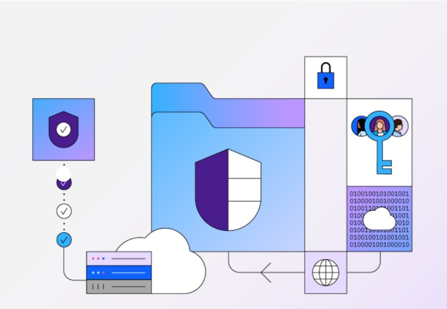

Author: Sanu Dhak

Data security and compliance are two sides of the same coin. Complex compliance regulations, such as DORA, GDPR, CCPA, SOX, PCI, HIPAA and others, all have the same purpose: preventing unauthorized access to customers’ and users’ sensitive information.
Comprehensive data security solutions, whether implemented on premises or in a hybrid cloud, help you gain greater visibility and insights to investigate and remediate cyberthreats. These solutions can enforce security policies and access controls in near real time and help you meet regulatory compliance requirements, improving your data security posture.
|
Does your security team know where your critical data resides and who has access to it? The key steps in protecting sensitive data include automating visibility, controlling access policies and implementing ongoing monitoring to identify vulnerabilities and risks before they lead to breaches, ransomware and other cyberattacks.
|
Support a zero trust approach to data management with an integrated suite of capabilities, including automatically created and securely isolated data copies, that can tackle cybersecurity gaps in on-premises or hybrid cloud deployments.
|
Addressing the growing number of privacy mandates is difficult enough; keeping up with reporting can be another hardship for your team. Simplify the process with automation, analytics and activity monitoring.
|
The digital era has increased the use of cloud infrastructure and cloud applications for every organization. The expanding data footprint, continued digital transformation and cloud migration have increased the organizations’ attack surface. As a result, while organizations have gained scale and efficiency, they now have a greater need for data security. Organizations need data security that covers their data on premises, in the cloud infrastructure, and in SaaS apps—and that integrates with their enterprise security systems.
With data breaches costing global organizations millions on average, it's critical to understand all your repositories for structured and unstructured data, where they reside, who can access them, what needs to be encrypted, what is the flow of this data, and what potential misconfigurations exist. These foundational solutions lay the groundwork for robust data security posture management.